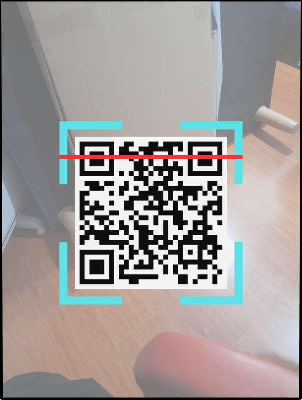

<ion-header [translucent]="true">
  <ion-toolbar>
    <ion-title>escanear_qr</ion-title>
  </ion-toolbar>
</ion-header>

<ion-content [fullscreen]="true" class="background">
      <ion-title size="large">escanear_qr</ion-title>
      <div class="contenedor"></div>
</ion-content>
